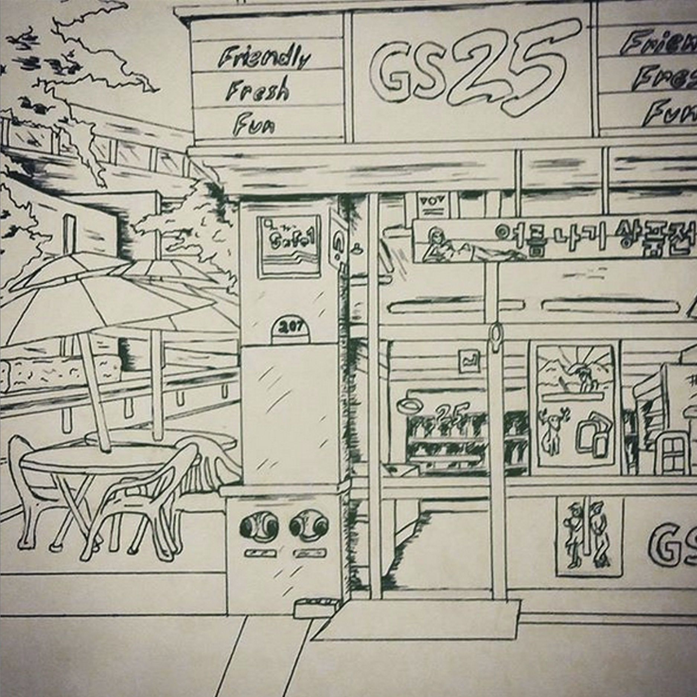
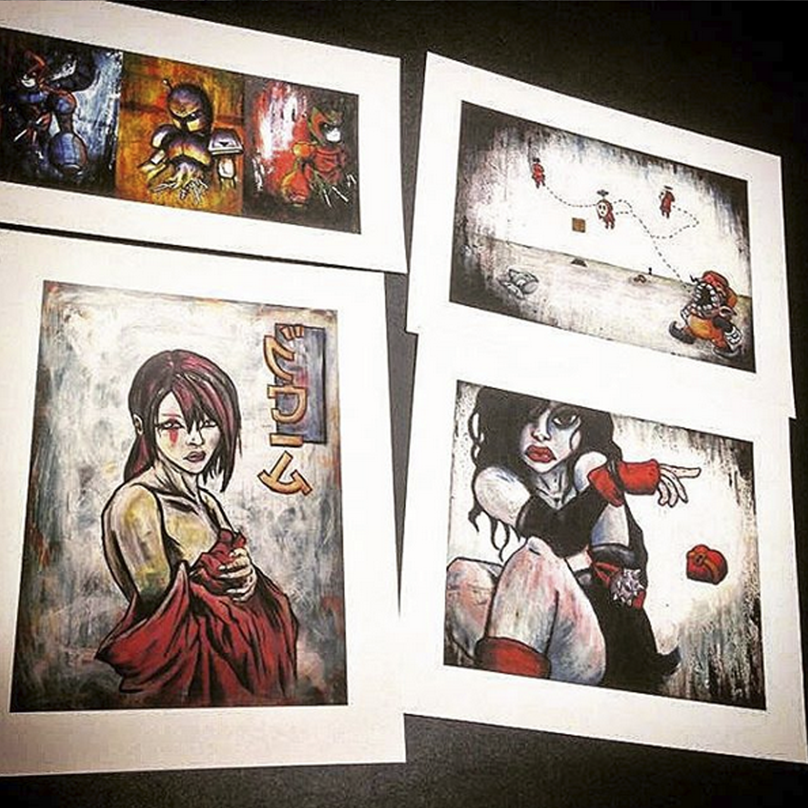
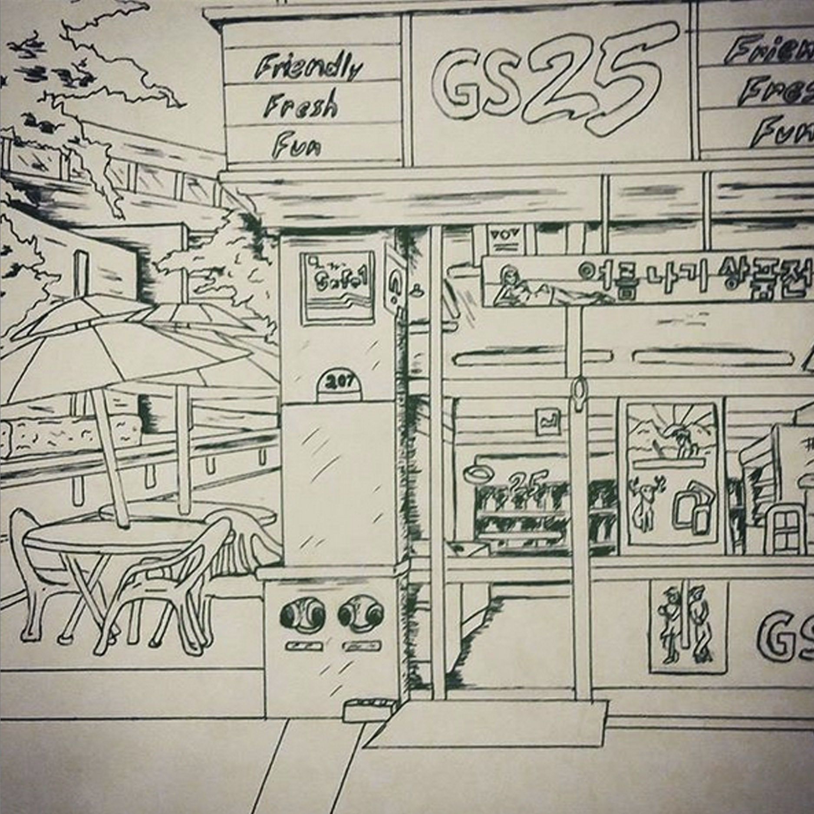
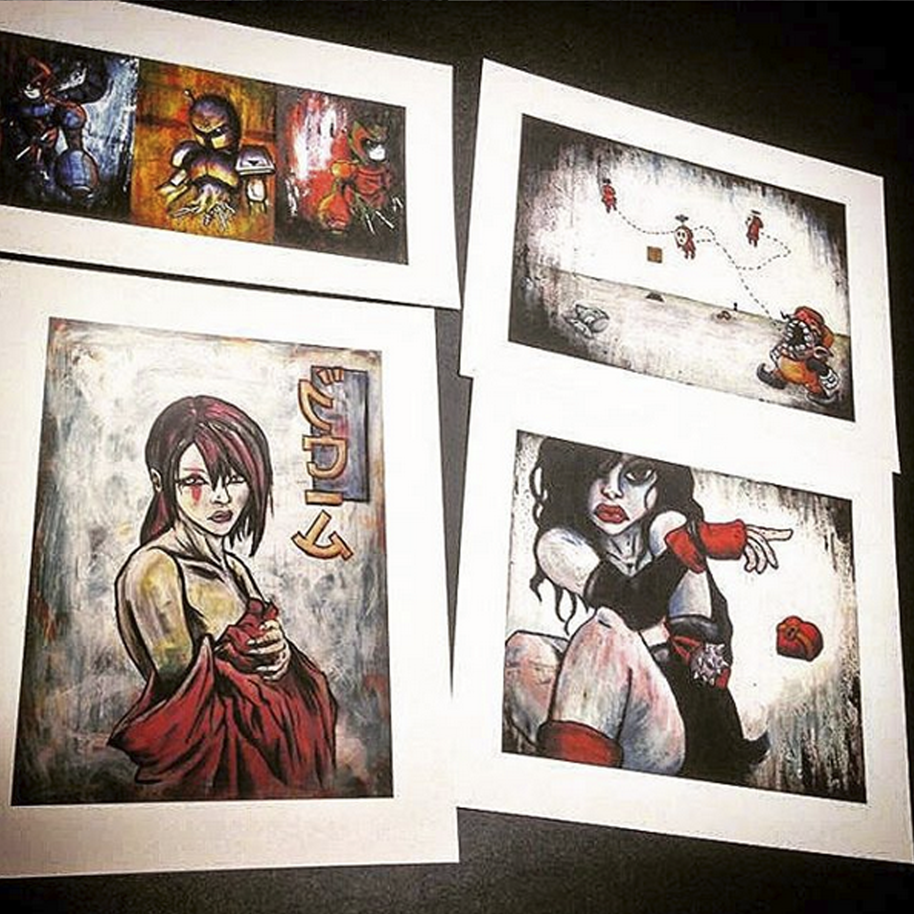

MATTHEW MARTNICK
WEB DEVELOPMENT / GRAPHIC DESIGN / FINE ART
Web Development
As a web developer I’ve worked on a wide range of projects that covered both user interface and back end
development. While my focus has been in JavaScript and various related frameworks like React and Angular
I have delved into other languages, primarily Java and C#.
Many of my projects have been independent
websites however from 2018 to 2019 I spent time working on the maintenance team for corporate banking
software.
Although my role here was UI I dealt with many stories that were tightly interwoven with the back-end
Java components and spent some time touching on security remediation measures. Overall my experience as a
developer crosses over a wide range of roles such as design, security, project management, and
independent game development.
Web Based Augmented Reality Game
This project is a prototype for a location based ARG like the existing Pokémon Go! game in
concept. The prototype uses the Google Locate API to render different enemy characters based on
the user’s location. The gameplay is designed to mimic traditional turn-based role-playing
games. Development has been ongoing on this project and the challenge lies in developing it in
JavaScript without the aid of a game engines framework. In this respect it’s been an attempt at
building a small game engine in a relatively basic web language.
Technologies: HTML, CSS, JavaScript, Geo-Locate API, Weather API Firebase
- https://project-one-165ac.firebaseapp.com/
Recipe Search App
FridgeEd is an early build of a social media website that allows the user to build a profile and
update their inventory of ingredients. Users can then search the Spoontastic recipe database by
the ingredients the user has. We’ve integrated Passport user authentication and MySQL to create
a user database and retain their information. For continued scaling we planned to rework the
user profile for customization and image uploads. The current build has been deployed through
Heroku but is still in ongoing development.
Technologies: HTML, CSS, JavaScript, Spoontastic API, Heroku, Express Server,
MySQL, MongoDB, Node.js
- https://immense-castle-94064.herokuapp.com/
Gif Search
This is a GIF file search engine developed using the Giphy API. Built in HTML, CSS, and
JavaScript
this is a basic app designed
to show my strengths in those three areas. The project uses Ajax to get the API response and
parse
the data after searching
based on one of the default search buttons or a user generated button created through the input
form. This project
was deployed as a git page using the Git Bash command line.
Technologies: HTML, CSS, JavaScript, Giphy API, Git Bash
- https://martnick1.github.io/GifTastic/
Graphic Design
As a designer I’ve mostly taken on freelance roles designing logos and album covers. My thorough
experience
working in the Adobe Suite dates back to 2009 and I can confidently say I excel with Photoshop in
particular. Logo design is always a process in the beginning but once the client likes the initial
design I
enjoy the continuing work in refining the design and touching up the most exact measurements.
Additionally, I have done some texture mapping for an unreleased computer animation. Upon receiving the
models I created the texture map through Photoshops 3D extension tool. Samples are provided below including
the initial character design one model was based on.
Fine Art
Drawing and painting have always been a passion of mine. I’ve spent a good part of my life refining this
skill through studying Romanticist painting, comics and illustration, graffiti, and many other visual genres.
I’ve spent a lot of time both drawing from life and using my creative side to create less formal
compositions.
What always drove me was the concept of creating a visual representation of something that either doesn’t or
could not exist. Creating worlds and the characters living in them through visual story telling has been a
similar creative practice. Over the years I’ve taken on more freelance commissions then I can count and
participated in gallery shows throughout the US and overseas.

 


